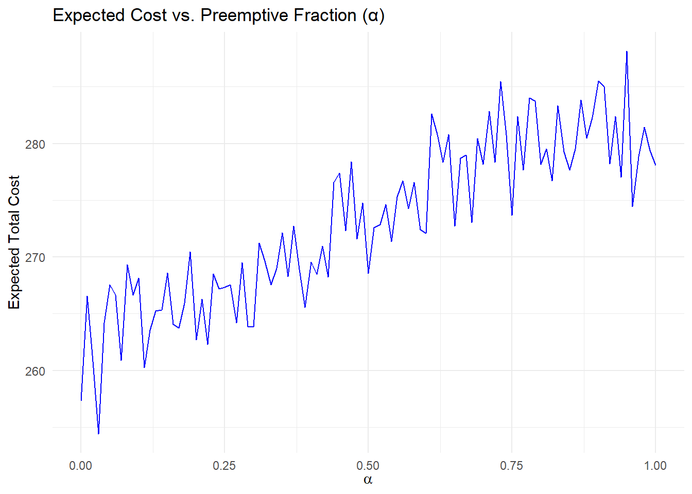
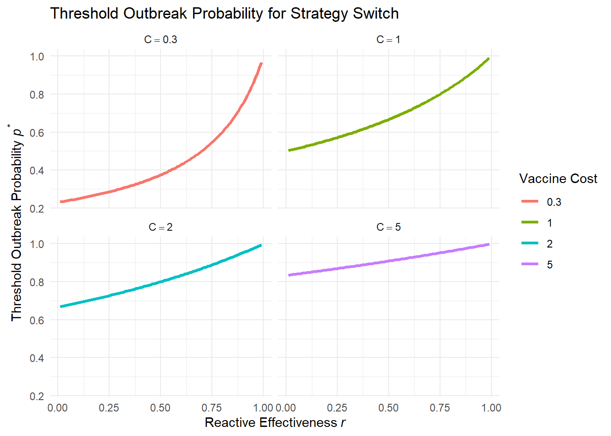
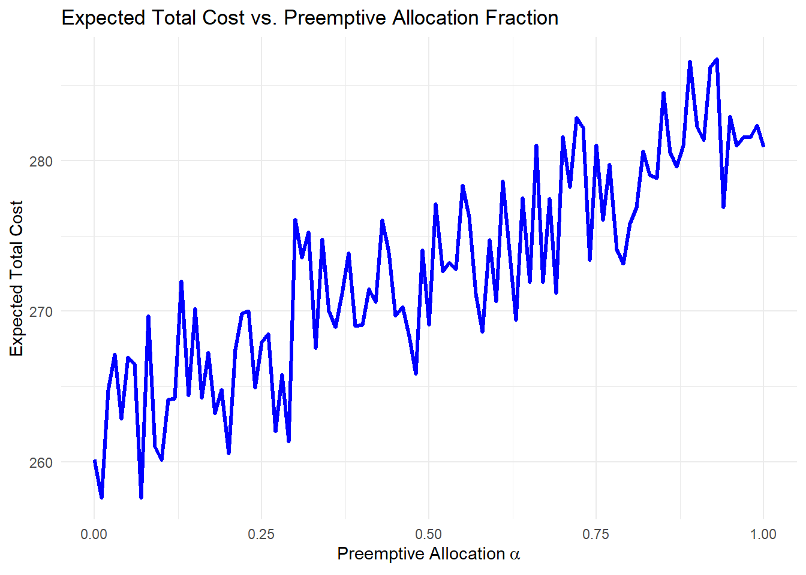
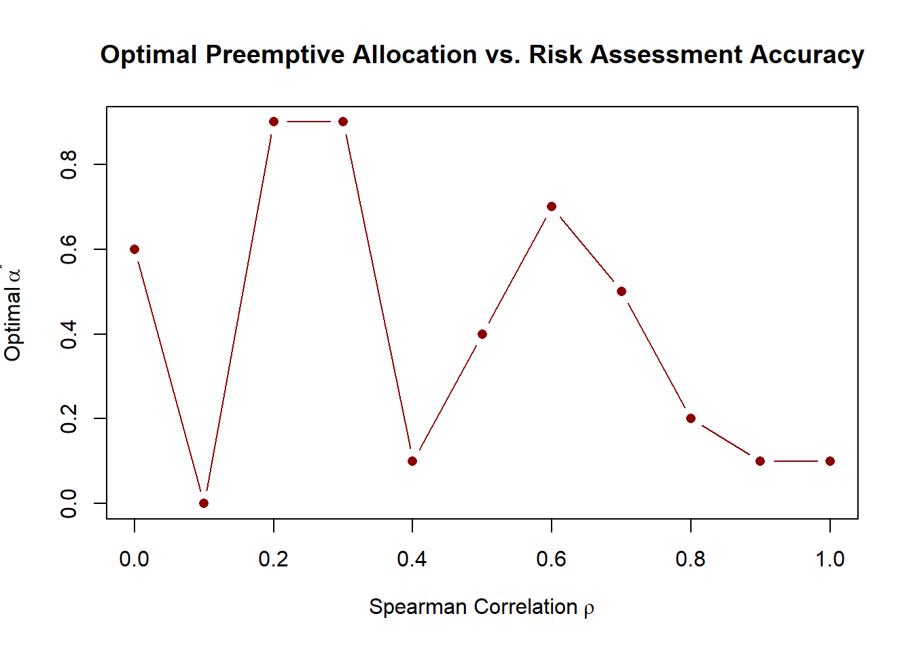

In the face of emerging infectious disease threats, public health officials must decide whether to deploy vaccines preemptively (before an outbreak occurs) or reactively (after an outbreak is detected). This strategic choice carries high stakes for both health outcomes and resource utilization. Preemptive vaccination can avert outbreaks by immunizing at-risk populations in advance, but it incurs upfront costs and risks vaccinating for an outbreak that might never occur. Reactive vaccination, in contrast, targets outbreaks once they are detected, potentially saving doses and avoiding unnecessary campaigns; however, losses accrue before control measures take effect [@Middleton2024; @Azman2019].
This dilemma is complicated by uncertainty. Outbreak risks vary between populations due to heterogeneous social, environmental, and biological factors, yet risk forecasts are imperfect [@Wells2020]. If authorities had perfect information, they could vaccinate high-risk populations in advance. In practice, risk estimates may be noisy, leading to misallocation of limited vaccines and potential failure to prevent major outbreaks [@Colijn2021].
Models from diverse diseases highlight that no one strategy is best across settings. Studies on mpox, hepatitis E, and MERS-CoV suggest that preemptive campaigns can be life-saving if outbreaks are severe or grow quickly [@Quilty2023; @Azman2019; @Wells2020]. Conversely, reactive strategies may use doses more efficiently when supply is constrained or preemptive coverage is uncertain [@Middleton2024].
Despite these insights, no unifying quantitative framework exists to compare reactive and preemptive vaccination under varying outbreak probability, resource availability, and risk uncertainty. Our study addresses this gap by developing an analytic and simulation-based framework for identifying the optimal allocation of vaccine resources — defined as the proportion \(\alpha\) used preemptively — across populations with potentially heterogeneous and uncertain risk.
Through analytical derivation and simulation, we characterize the impact of outbreak probability (\(p\)), reactive efficacy (\(r\)), vaccine budget (\(f\)), and targeting accuracy (Spearman rank correlation $ ho$) on strategy performance. Our results offer practical guidance for policymakers deciding how much to invest in preemptive campaigns when vaccine stockpiles are constrained and risk signals are imperfect.
3 Model
3.1 Single-Population Baseline
We consider a single population with outbreak probability $p$, outbreak cost $D$, vaccination cost $C$, and reactive effectiveness $r$.
Preemptive vaccination cost:
\[
\mathbb{E}[\text{Cost}_{\text{preemptive}}] = C
\]
n <-100p <-0.3r <-0.5C <-1D <-10f <-0.1alpha_vals <-seq(0, 1, by =0.01)cost_fn <-function(alpha) { k_pre <-floor(alpha * f * n) k_react <-floor((1- alpha) * f * n) x <-rbinom(1, n - k_pre, p) cost_pre <- k_pre * C cost_react <-min(x, k_react) * (C + (1- r) * D) cost_loss <-max(0, x - k_react) * D cost_pre + cost_react + cost_loss}costs <-sapply(alpha_vals, function(a) mean(replicate(200, cost_fn(a))))plot_df <-data.frame(alpha = alpha_vals, cost = costs)library(ggplot2)ggplot(plot_df, aes(x = alpha, y = cost)) +geom_line(color ="blue") +labs(title ="Expected Cost vs. Preemptive Fraction (\u03b1)",x =expression(alpha),y ="Expected Total Cost") +theme_minimal()

4 Results
4.1 Thresholds for Strategy Switching
We compute the outbreak probability threshold $p^*$ where the preemptive strategy becomes more cost-effective than reactive, across varying values of $r$ and $C$.
Code
r_vals <-seq(0.01, 0.99, by =0.01)C_vals <-c(0.3, 1, 2, 5)D <-1data <-expand.grid(r = r_vals, C = C_vals) %>%mutate(p_thresh = C / (C + (1- r) * D))ggplot(data, aes(x = r, y = p_thresh, color =factor(C))) +geom_line(size =1.1) +facet_wrap(~ C, labeller =label_bquote(C == .(C)), nrow =2) +labs(title ="Threshold Outbreak Probability for Strategy Switch",x =expression("Reactive Effectiveness"~italic(r)),y =expression("Threshold Outbreak Probability"~italic(p)^"*"),color ="Vaccine Cost") +theme_minimal()

4.2 Cost Landscape under Hybrid Strategy
We simulate the expected cost as a function of $$, the proportion of vaccine allocated preemptively.
Code
n <-100p <-0.3r <-0.5C <-1D <-10f <-0.1alpha_vals <-seq(0, 1, by =0.01)cost_fn <-function(alpha) { k_pre <-floor(alpha * f * n) k_react <-floor((1- alpha) * f * n) x <-rbinom(1, n - k_pre, p) cost_pre <- k_pre * C cost_react <-min(x, k_react) * (C + (1- r) * D) cost_loss <-max(0, x - k_react) * D cost_pre + cost_react + cost_loss}costs <-sapply(alpha_vals, function(a) mean(replicate(200, cost_fn(a))))plot_df <-data.frame(alpha = alpha_vals, cost = costs)ggplot(plot_df, aes(x = alpha, y = cost)) +geom_line(color ="blue", size =1.2) +labs(title ="Expected Total Cost vs. Preemptive Allocation Fraction",x =expression("Preemptive Allocation"~ alpha),y ="Expected Total Cost") +theme_minimal()

4.3 Impact of Imperfect Risk Assessment
We explore the difference in optimal $^*$ under varying values of ranking correlation $$.
Code
p_true <-rbeta(100, 2, 5)add_noise_to_risk <-function(p, rho) { z <-qnorm(rank(p) / (length(p) +1)) noise <-rnorm(length(p)) z_hat <- rho * z +sqrt(1- rho^2) * noisereturn(rank(z_hat))}rho_vals <-seq(0, 1, by =0.1)alpha_star_by_rho <-sapply(rho_vals, function(rho) { target_ranks <-add_noise_to_risk(p_true, rho) p_sorted <- p_true[order(target_ranks, decreasing =TRUE)] k_seq <-floor(seq(0, 1, by =0.01) *length(p_true) * f) cost_vec <-sapply(k_seq, function(k) { pre_cost <- k * C post_risk <- p_sorted[(k +1):length(p_true)] x <-rbinom(1, length(post_risk), p) react_cost <-min(x, length(post_risk)) * (C + (1- r) * D) loss <-max(0, x -length(post_risk)) * D pre_cost + react_cost + loss }) k_seq[which.min(cost_vec)] / (length(p_true) * f)})plot(data.frame(rho = rho_vals, alpha_star = alpha_star_by_rho),type ="b", pch =16, col ="darkred",main ="Optimal Preemptive Allocation vs. Risk Assessment Accuracy",xlab =expression("Spearman Correlation"~ rho),ylab =expression("Optimal"~ alpha^"*"))

5 Discussion
Our modeling framework compares reactive and preemptive vaccination strategies under varying outbreak probability, intervention effectiveness, vaccine availability, and targeting accuracy. Several key findings emerge:
Threshold logic: The optimal strategy depends strongly on the outbreak probability \(p\), the relative effectiveness \(r\) of reactive response, and the ratio \(D/C\) of outbreak cost to vaccine cost. As \(p\) increases or \(r\) decreases, preemptive vaccination becomes favorable.
Multi-population effect: In multi-population settings with limited vaccine capacity \(f\), the likelihood of multiple simultaneous outbreaks makes reactive strategies riskier. As a result, preemptive vaccination becomes optimal even at lower \(p\).
Hybrid strategies are often optimal: A mixed approach, using a fraction \(\alpha\) of vaccine stockpile preemptively, balances risks and resources. Our results show that \(\alpha^*\) increases with \(p\) and \(D/C\), but decreases with higher \(r\) or poor targeting (\(\rho\)).
Impact of imperfect risk prediction: Targeting inaccuracy reduces the value of preemptive allocation. As \(\rho\) (Spearman rank correlation between true and estimated risk) decreases, optimal \(\alpha^*\) declines. Imperfect information tilts the optimal strategy toward reactive use.
6 Conclusion
Preemptive and reactive vaccination strategies each have contexts in which they are optimal. Our framework identifies threshold conditions where one dominates the other, and quantifies the sensitivity to parameters and information uncertainty. These results support a shift from heuristic planning toward data-driven, adaptive vaccine allocation policies.
We recommend the following:
Use threshold curves (e.g., \(p^* = C / (C + (1 - r)D)\)) for preliminary planning.
Invest in risk forecasting tools to improve targeting accuracy (\(\rho\)).
Adopt hybrid vaccination strategies in multi-population settings with limited resources.
Integrate simulations into real-time response planning to assess the expected value of preemptive coverage.
This framework is extensible to spatial networks, time-dependent outbreaks, and dynamic allocation. Future work can apply this model to real-world outbreak risk maps and further refine recommendations for pandemic preparedness.